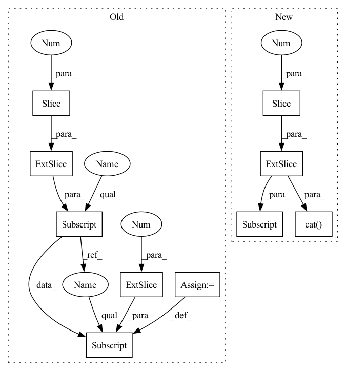

Pattern ID :12294

Before Change
w = o_boxes[:, :, 2] - o_boxes[:, :, 0]
h = o_boxes[:, :, 3] - o_boxes[:, :, 1]
o_boxes[:, :, :2] = (o_boxes[:, :, :2] + o_boxes[:, :, 2:]) / 2
o_boxes[:, :, 2] = w
o_boxes[:, :, 3] = h
return o_boxes.squeeze(0)
After Change
Returns:
torch.Tensor: torch.Tensor(N,4) as centerx centery width height
wh = boxes[:, 2:] - boxes[:, :2]
cxcy = (boxes[:, 2:] + boxes[:, :2]) / 2
return torch.cat([cxcy, wh], dim=1)
@torch.jit.script
def batched_nms(boxes: torch.Tensor, scores: torch.Tensor, batch_ids: torch.Tensor,
iou_threshold: float = 0.4) -> torch.Tensor:
In pattern: SUPERPATTERN
Frequency: 3
Non-data size: 10
Instances
Fragment ID: 41662824
Project Name: borhanmorphy/light-face-detection
Commit Name: 6ee4e76aa1ee02b6cddc42fa8cc2d2a0f89970f8
Time: 2021-09-16
Author: borhano.f.42@gmail.com
File Name: fastface/utils/box.py
M Class Name: AnonimousClass
N Class Name: AnonimousClass
M Method Name: xyxy2cxcywh(1)
N Method Name: xyxy2cxcywh(1)
M Parent Class:
N Parent Class:
M File Name: fastface/utils/box.py
N File Name: fastface/utils/box.py
M Start Line: 93
M End Line: 103
N Start Line: 127
N End Line: 130
'>
Before Change
Returns:
torch.Tensor: torch.Tensor(N,4) as centerx centery width height
o_boxes = boxes.clone().unsqueeze(0)
// x1,y1,x2,y2
w = o_boxes[:, :, 2] - o_boxes[:, :, 0]
h = o_boxes[:, :, 3] - o_boxes[:, :, 1]
o_boxes[:, :, :2] = (o_boxes[:, :, :2] + o_boxes[:, :, 2:]) / 2
o_boxes[:, :, 2] = w
o_boxes[:, :, 3] = h
return o_boxes.squeeze(0)
After Change
Returns:
torch.Tensor: torch.Tensor(N,4) as centerx centery width height
wh = boxes[:, 2:] - boxes[:, :2]
cxcy = (boxes[:, 2:] + boxes[:, :2]) / 2
return torch.cat([cxcy, wh], dim=1)
@torch.jit.script
def batched_nms(boxes: torch.Tensor, scores: torch.Tensor, batch_ids: torch.Tensor,
iou_threshold: float = 0.4) -> torch.Tensor:
'>
Fragment ID: 41662822
Project Name: borhanmorphy/fastface
Commit Name: 6ee4e76aa1ee02b6cddc42fa8cc2d2a0f89970f8
Time: 2021-09-16
Author: borhano.f.42@gmail.com
File Name: fastface/utils/box.py
M Class Name: AnonimousClass
N Class Name: AnonimousClass
M Method Name: xyxy2cxcywh(1)
N Method Name: xyxy2cxcywh(1)
M Parent Class:
N Parent Class:
M File Name: fastface/utils/box.py
N File Name: fastface/utils/box.py
M Start Line: 93
M End Line: 103
N Start Line: 127
N End Line: 130
'>
Before Change
def backward(cls, ctx, grad_output):
group0: torch.Tensor = ctx.saved_tensors[0]
group1: torch.Tensor = ctx.saved_tensors[1]
grad_input0 = group0.new_zeros(grad_output.shape[0], 3, 4)
grad_input0[:, :, :3] = grad_output @ group1.transpose(1, 2)
grad_input0[:, :, 3] = grad_output[:, :, 3]
grad_input1 = group0[:, :, :3].transpose(1, 2) @ grad_output
return grad_input0, grad_input1
After Change
def backward(cls, ctx, grad_output):
group0: torch.Tensor = ctx.saved_tensors[0]
group1: torch.Tensor = ctx.saved_tensors[1]
grad_input0 = torch.cat(
(grad_output @ group1.transpose(1, 2), grad_output[:, :, 3:]), dim=-1
)
grad_input1 = group0[:, :, :3].transpose(1, 2) @ grad_output
return grad_input0, grad_input1
'>
Fragment ID: 41662820
Project Name: facebookresearch/theseus
Commit Name: cd2fc2c415b7e6bc41c963b98689c786edeacc1e
Time: 2023-03-10
Author: 6612911+fantaosha@users.noreply.github.com
File Name: theseus/labs/lie/functional/se3_impl.py
M Class Name: Compose
N Class Name: Compose
M Method Name: backward(3)
N Method Name: backward(3)
M Parent Class: lie_group.BinaryOperator
N Parent Class: lie_group.BinaryOperator
M File Name: theseus/labs/lie/functional/se3_impl.py
N File Name: theseus/labs/lie/functional/se3_impl.py
M Start Line: 784
M End Line: 788
N Start Line: 786
N End Line: 788